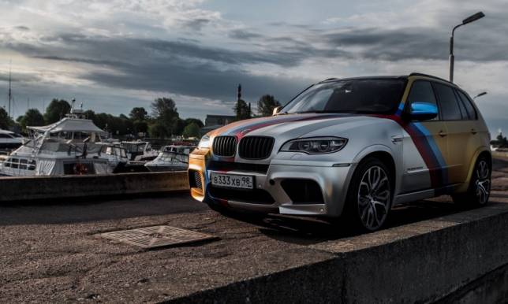
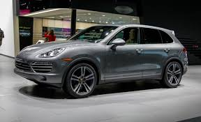

BMW |
|
|---|---|
|  | Bayerische Motoren Werke AG (German pronunciation: [ˈbaɪ̯ʁɪʃə mɔˈtʰɔʁn̩ ˈvɛɐ̯kə] (About this sound listen); German for Bavarian Motor Works), usually known under its abbreviation BMW (German pronunciation: [ˈbeːˈʔɛmˈveː] (About this sound listen)), is a German luxury vehicle, sports car, motorcycle, and engine manufacturing company founded in 1916. It is one of the best-selling luxury automakers in the world. |
Porsche |
|
|---|---|
|  | Dr. Ing. h.c. F. Porsche AG, usually shortened to Porsche AG (German pronunciation: [ˈpɔʁʃə] (About this sound listen)), is a German automobile manufacturer specializing in high-performance sports cars, SUVs and sedans. Porsche AG is headquartered in Stuttgart, and is owned by Volkswagen AG, which is itself majority-owned by Porsche Automobil Holding SE. Porsche's current lineup includes the 718 Boxster/Cayman, 911, Panamera, Macan and Cayenne. |